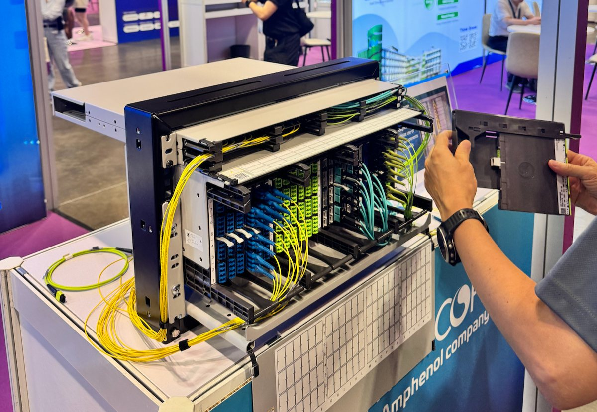
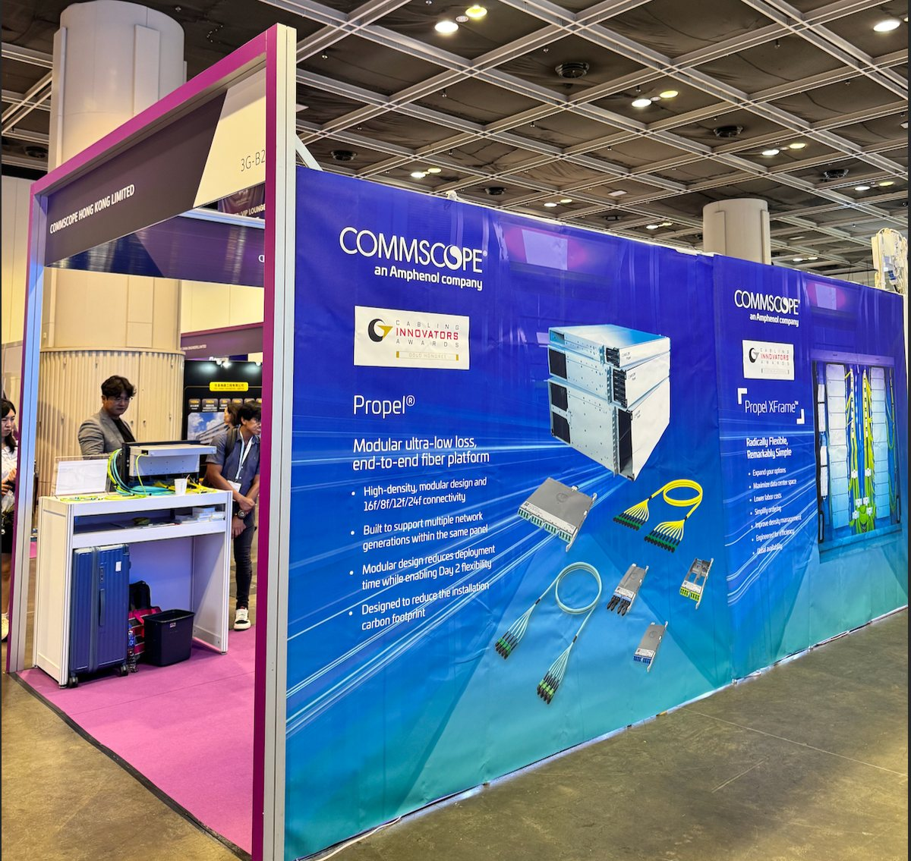

AI Data Center Cabling in Hong Kong — Inside CommScope Propel & Rapid Fiber Connect
2026-07-14 · Excel Unit Technology

How CommScope Propel and Rapid Fiber Connect solve AI data centre cabling in Hong Kong — high-density fibre, off-site pre-termination, faster GPU deployment.
The AI build-out has changed what a data centre demands from its physical layer. Where a traditional hall might run tens of thousands of connections, a single AI training fabric packs thousands of fibre links into a handful of GPU racks — at 400G and 800G today, and 1.6T on the roadmap. In Hong Kong's space-constrained, high-cost facilities, the old approach to data center cabling simply can't keep pace.
At Data Center Asia 2026 (HKCEC), we showcased the two CommScope platforms built for exactly this moment: Propel® and Rapid Fiber Connect™.
The problems AI data centres actually face

| The AI data-centre problem | What it costs you | How we solve it |
| Thousands of GPU fibre links to terminate on-site | Weeks of skilled labour; compute idle | Off-site pre-terminated pigtails (Rapid Fiber Connect) |
| Speeds jumping 400G → 800G → 1.6T | Rip-and-replace every generation | One modular panel spans generations (Propel) |
| Density vs. limited HK floor space | Wasted white space, higher rent per rack | High-density 16f/8f/12f/24f in a single frame |
| Field errors during rushed installs | Outages, re-work, failed tests | Pre-labelled, factory-tested assemblies |
Propel® — modular, flexible and ready to scale
Propel is an ultra-low-loss, end-to-end high-density fibre platform. Its modular design supports 16f / 8f / 12f / 24f connectivity and carries multiple network generations within the same panel — so a migration from 400G to 800G doesn't mean tearing out your backbone. It's engineered to cut deployment time while preserving Day-2 flexibility, and to lower the installation carbon footprint. (Cabling Innovators Award — Gold Honoree.)
Rapid Fiber Connect™ — engineered for AI, built for scale
Rapid Fiber Connect is purpose-built for ultra-dense AI data centres. Its flexible panels and integrated, pre-configured, pre-labelled pigtails let GPU and switch connections be assembled and integrated off-site — moving the slowest, most error-prone work off the live floor. The result: cabling, testing, deployment and scaling get dramatically simpler, and your fabric goes live in days, not weeks.

Why source it through Excel Unit Technology
As CommScope's authorised distributor across Hong Kong, Macau and Asia since 2010, Excel Unit backs these platforms with certified BOM design, 1,000,000+ products ex-stock in our 50,000 sq ft Kwai Chung warehouse, same-day despatch, and up to 25-year CommScope warranty. From HKEX's data centre to the West Kowloon Cultural District, our structured-cabling foundation is already under Hong Kong's most demanding sites.
Planning a project? 索取報價
Distributor pricing and Hong Kong stock within 2 business hours.